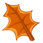

Осень 2026
Осень. Сказочный чертог,
Всем открытый для обзора.
Просеки лесных дорог,
Заглядевшихся в озера.
Борис Пастернак
Осенние месяцы
Сентябрь
| Понедельник | Вторник | Среда | Четверг | Пятница | Суббота | Воскресенье |
|---|---|---|---|---|---|---|
| 1 | 2 | 3 | 4 | 5 | 6 | 7 |
| 8 | 8 | 10 | 11 | 12 | 13 | 14 |
| 15 | 16 | 17 | 18 | 19 | 20 | 21 |
| 22 | 23 | 24 | 25 | 26 | 27 | 28 |
| 29 | 30 |

Октябрь

| Понедельник | Вторник | Среда | Четверг | Пятница | Суббота | Воскресенье |
|---|---|---|---|---|---|---|
| 1 | 2 | 3 | 4 | 5 | 6 | 7 |
| 8 | 8 | 10 | 11 | 12 | 13 | 14 |
| 15 | 16 | 17 | 18 | 19 | 20 | 21 |
| 22 | 23 | 24 | 25 | 26 | 27 | 28 |
| 29 | 30 |
Ноябрь
| Понедельник | Вторник | Среда | Четверг | Пятница | Суббота | Воскресенье |
|---|---|---|---|---|---|---|
| 1 | 2 | 3 | 4 | 5 | 6 | 7 |
| 8 | 8 | 10 | 11 | 12 | 13 | 14 |
| 15 | 16 | 17 | 18 | 19 | 20 | 21 |
| 22 | 23 | 24 | 25 | 26 | 27 | 28 |
| 29 | 30 |

Музыка осени
1. Осенняя ("ДДТ")
2. Листья жёлтые ("Самоцветы")
3. Жёлтый лист, осенний ("Колибри")
4. Октябрь. Осенняя песня (П.И. Чайковский)
Галерея осени


Интересная информация
